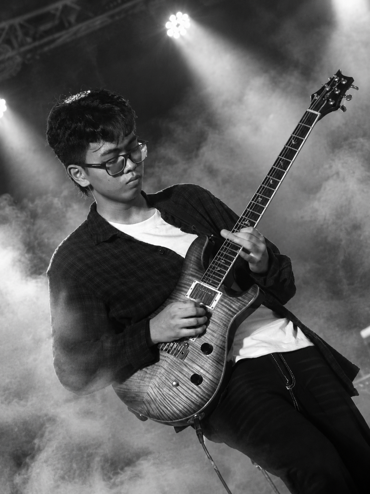
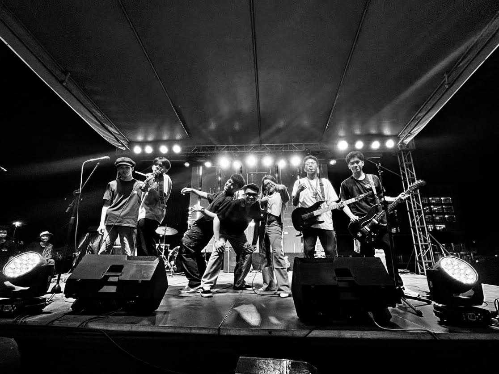
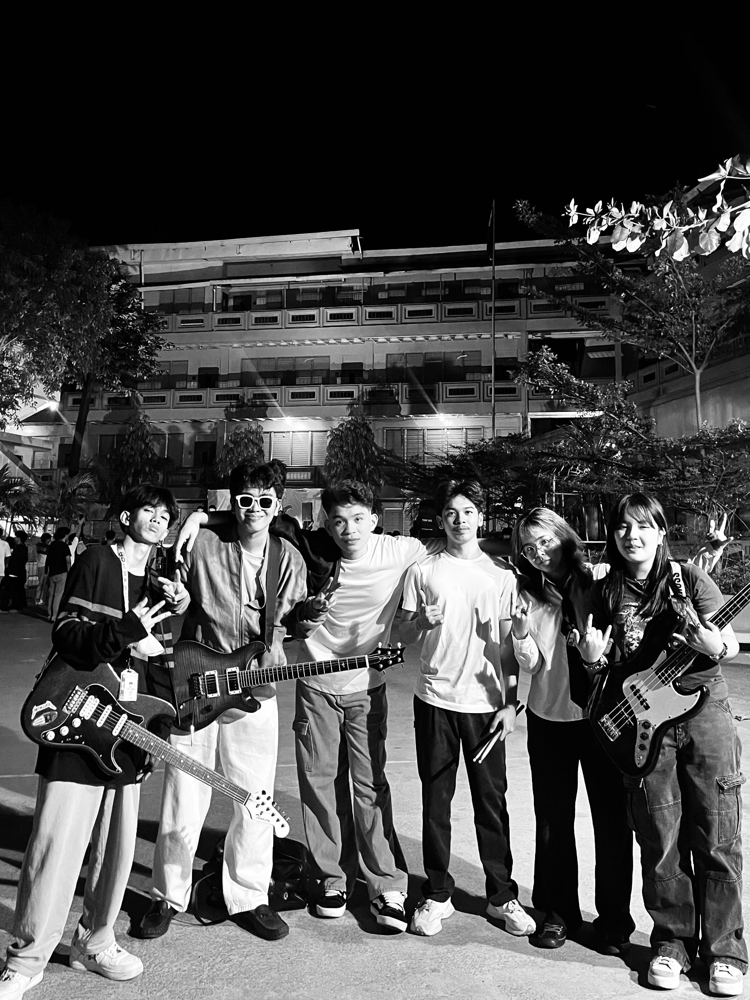

Our mission
Make with purpose. Make it heard.
To create quality musical instruments that showcase Filipino creativity, craftsmanship, and passion for music while supporting the growth of local musical talent.
CRAFTED IN THE PHILIPPINES
Filipino-made instruments shaped by sound, culture, and honest craftsmanship.
Explore the CollectionCrafted in the Philippines
Hiraya Musiko is a Filipino-inspired musical instrument brand built around creativity, craftsmanship, and a deep appreciation for music. We believe every instrument should do more than produce sound — it should express the musician's identity, inspire new ideas, and bring people together through music. By celebrating Filipino craftsmanship and designing instruments for different musical styles and playing experiences, we aim to help musicians find instruments that feel personal, expressive, and ready for every stage of their journey.
Purpose & aspiration
Built on a belief in Filipino creativity, Hiraya Musiko makes room for local craft and musical voices to be heard more widely.
Our mission
To create quality musical instruments that showcase Filipino creativity, craftsmanship, and passion for music while supporting the growth of local musical talent.
Our vision
To become a recognized Filipino musical instrument brand that brings local craftsmanship and creativity to wider audiences and the global music community.
A story in progress
Illustrative fictional sample content for this demo website.
Founded with a vision to celebrate Filipino musical craftsmanship.
Introduced the first acoustic instrument collection.
Expanded into electric and bass guitars.
Developed a dedicated instrument-making workshop.
Showcased instruments at local music events and community gatherings.
Expanded the product range to keyboards, drums, and accessories.
Introduced artist spotlight features for Filipino musicians.
Expanded community initiatives and Filipino-inspired designs.
Continued developing the catalog and pursuing wider brand recognition.
The music community
Meet the Filipino musicians bringing melody, energy, and character to every performance.

Featured artist
Songwriter & Lead Guitarist
OPM · Pop Rock · R&B
Driven by a passion for songwriting and expressive guitar work, Render Cylle Solis brings together the heart of OPM, the energy of pop rock, and the smooth feel of R&B. Through his songwriting, expressive guitar work, and use of Hiraya Musiko instruments, he showcases how the right instrument can become an extension of a musician's creativity and individuality. His musical journey reflects the connection between Filipino craftsmanship and the sounds that inspire today's musicians.

Featured band
Band
OPM · Pop Rock
Bendahe brings Filipino music and high-energy pop rock to the stage. With a powerful live performances, dynamic arrangements, and a strong connection with audiences, the band showcases Hiraya Musiko instruments in a live-performance setting. Bendahe represents the sound, confidence, and stage presence that bring instruments to life in front of an audience.

Featured band
Band
OPM · Pop Rock · Ballad · Funk
Blending the emotion of ballads with the drive of pop rock and the groove of funk, 16th Ave explores different sides of Filipino music. Through dynamic live performances, participation in Battle of the Bands competitions and its continuing live-performance journey, the group brings different musical styles. Featuring Hiraya Musiko instruments as part of their musical identity. 16th Ave reflects the creativity, versatility, and individuality of Filipino musicians.
Filipino-made
Our instruments are built with care, attention, and a strong sense of musical identity rooted in the Philippines.
Tone-forward
Hiraya instruments are designed to sound expressive, balanced, and alive across stage and studio use.
Built for players
We create instruments that feel approachable, reliable, and inspired by real musical needs.
Music & connection
Find an instrument that feels right for your sound, your style, and the music you want to share.
Find ItEvery musician brings a different feeling to an instrument. Some search for a warm tone that feels familiar, while others look for a sound that stands out on stage. Some are just beginning their musical journey, while others have spent years finding their own voice. At Hiraya Musiko, we believe that an instrument should be more than something you play — it should be something that connects with your style, your story, and the music you want to share.
Find the sound that feels like your own.
Sign Up
Receive updates on new instruments, limited releases, and community events from our Filipino-made collection.
Create an accountLogin
Access your saved favorites, recent inquiries, and updates from Hiraya Instruments.
Go to login